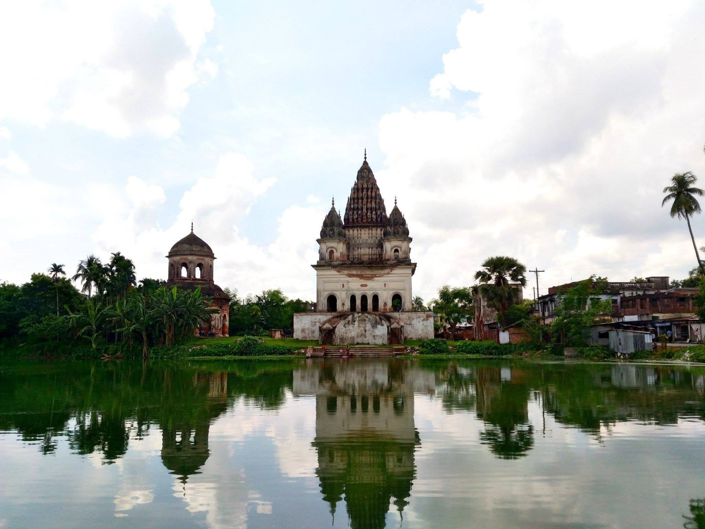
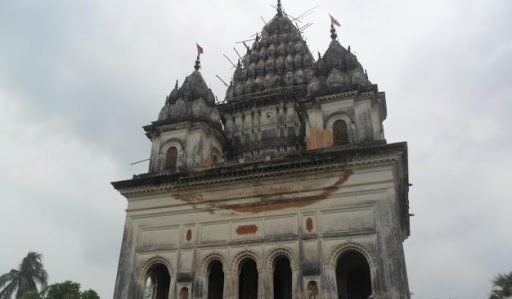

The Puthia Temple Complex consists of a cluster of notable old Hindu temples in Puthia Upazila, Rajshahi District, Bangladesh. Located 23 km to the east of Rajshahi city, it has the largest number of historic temples in Bangladesh.[1] The temples were built by Hindu Zamindars Rajas of the Puthia Raj family who were noted philanthropists of Rajshahi. The temples have been built in terracotta in a variety of styles combining the typical Jor-bangla architecture with other influences. The Rajbari or Palace of the Raja of Puthia and the Dol Mancha are part of the complex.[2] The temples are laid out around a lake with a sprawling lawn.[3] The Puthia Raj family was established by a holy man named Bhatsacharya, who lived in the 16th century. Raja Man Singh, governor of the Mughal emperor Akbar, confiscated the Jagir of the refractory pathan jagirdar of Rajshahi named Lashker Khan and bestowed the Zamindary on the saintly Bhatsacharya for his learning, but he declined. However, his son Pitambar was granted the Lashkarpur estate permanently. On his death, his son Nilambar received the title of Raja from Emperor Jahangir. The Puthia Royal Family estate was the second largest zamindary and the wealthiest in British Bengal. After India's partition, the then Pakistani government abolished the zamindary system and confiscated all Hindu properties. The Royal Family migrated to India shortly afterwards.
According to 2011 Bangladesh census, Puthia had a population of 207,490. Males constituted 50.64% of the population and females 49.36%. Muslims formed 93.93% of the population, Hindus 5.27%, Christians 0.48% and others 0.33%. Puthia had a literacy rate of 49.58% for the population 7 years and above.[2] As of the 1991 Bangladesh census, Puthia has a population of 342,405. Males constitute 51.16% of the population, and females 48.84%. This Upazila's eighteen up population is 81679. Puthia has an average literacy rate of 25.5% (7+ years), and the national average of 32.4% literate.[3]